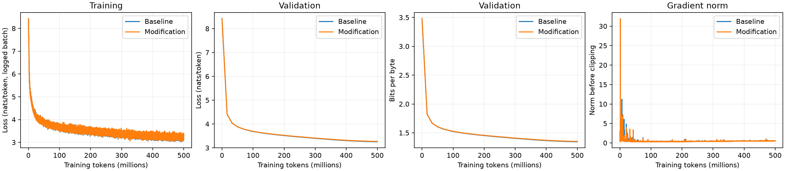

I implemented a from-scratch decoder-only Transformer (causal self-attention with RoPE, pre-norm blocks, tied embeddings, gated feed-forward) and pre-trained two ~27.8M-parameter models for 500,006,912 tokens each: a SiLU baseline and a GELU variant that changes exactly one feature. Best validation bits per byte: baseline 1.3453, variant 1.3509 — a near-neutral ablation.
Corpus: idealab-cs2/fundamentals-of-llms-training-data (English FineWeb subset, revision
9624da98…), 541,041 documents.
<|endoftext|> id 0; shared by every run.Choice of validation size. 1 % gives about 5,000 documents (~3 M tokens), which is comfortably enough to resolve bits-per-byte differences of a few thousandths between two similar models, while keeping each of the 31 validations cheap; a larger split would slow every run without changing the conclusion, so I kept the course default for comparability.
AdamW (β = 0.9, 0.95), weight decay 0.1 on 2-D parameters, peak learning rate 1e-3 with a 500-step warmup and cosine decay to 10 %, batch 32 × 512 = 16,384 tokens per step, 30,518 steps = 500,006,912 tokens (1.09 passes over the training split), float32, gradient-norm clipping at 1.0, seed 0. Every setting, the data, tokenizer and schedule are identical for both runs; only the activation differs, and the identical step-0 validation loss (8.4175 vs 8.4181) confirms both start from the same initial weights.
Recorded deviation: the course default is one RTX 2080 Ti on IT010146.
All eight cards there were allocated by other users, so both runs used one
A100-PCIE-40GB (IT010213) each, in parallel — the same hardware and settings for both
models. train.sbatch was also changed from --time=06:00:00 to
--time=12:00:00. Grading is bits per byte, which is hardware-independent.
| Model | Vocab | Parameters | Trained tokens | Best val bpb | Runtime | Device |
|---|---|---|---|---|---|---|
| baseline (SiLU) | 4,096 | 27,795,968 | 500,006,912 | 1.3453 | 3.18 h | A100-PCIE-40GB, fp32 |
| variant (GELU) | 4,096 | 27,795,968 | 500,006,912 | 1.3509 | 3.17 h | A100-PCIE-40GB, fp32 |

Expected effect (recorded before running). SiLU and GELU are both smooth, ReLU-family shapes, and in a gated feed-forward layer the gate's exact shape has little influence on capacity; I therefore expected almost no change in bits per byte, with identical parameter count and compute.
Results. Baseline 1.3453 vs variant 1.3509 bpb — GELU is +0.0056 bpb (+0.42 %). The curves differ by no more than a few thousandths at every checkpoint, and the gap does not widen over training. Validation loss fell from 8.42 to 3.26 (bpb 3.48 → 1.35), well below the ≈2.70 bpb of a uniform guess over the vocabulary.
Conclusion. Swapping the activation is effectively neutral at this scale: the variant is marginally worse, but the difference is within run-to-run noise, so no real effect can be claimed. Parameter count and compute are unchanged, and with ~1.09 passes over the data overfitting is not a confounder. The experiment supports the expectation that in a gated FFN the choice between SiLU and GELU matters little.
Three tests in tests/test_student.py: T1 causal masking (changing future
tokens must not change earlier outputs), T2 next-token alignment (exact shifted
inputs/targets), and T3 one optimizer update (the pre-clip gradient norm is
returned, gradients are cleared between steps, and -100 targets are ignored). Explanations,
including what each test would miss, are in notes/TESTS.md.
Bug demonstration. Patch notes/bug-demo.patch flips the attention mask from
tril to triu; T1 then fails (notes/bug-demo-fail.txt) because earlier
positions can see the future, and reverting makes it pass (notes/bug-demo-pass.txt).
Separately, the supplied end-to-end test caught a real bug: GPT.forward used
view(-1) on the targets, which are non-contiguous slices returned by
make_targets; reshape(-1) fixed it. Full suite: 8 passed.
I used a coding agent (pi, running locally and over SSH to the cluster) to scaffold the project, manage environments, keep documentation, run the training jobs and help draft this report. All implementation decisions were reviewed and verified independently: the vectorised attention was checked against a naive per-position loop, the loss against a manual cross-entropy, and the optimizer step against a toy model with a known gradient norm. Sources: the course notes and assignment specification, Karpathy's nanoGPT, the Stanford CS336 component-based approach, and the PyTorch documentation.